Repair Procedures
Teaching Procedures
1. Key Teaching Procedure
Key teaching must be done after replacing a defective PCM(ECM) or when providing additional keys to the vehicle owner.
The procedure starts with an PCM(ECM) request for vehicle specific data (PIN code: 6digits) from the tester. The "virgin" PCM(ECM) stores the vehicle specific data and the key teaching can be started. The "learnt" PCM(ECM) compares the vehicle specific data from the tester with the stored data. If the data are correct, the teaching can proceed.
If incorrect vehicle specific data have been sent to the PCM(ECM) three times, the PCM(ECM) will reject the request of key teaching for one hour. This time cannot be reduced by disconnecting the battery or any other manipulation. After reconnecting the battery, the timer starts again for one hour.
The key teaching is done by ignition on with the key and additional tester commands. The PCM(ECM) stores the relevant data in the EEPROM and in the transponder. Then the PCM(ECM) runs the authentication required for confirmation of the teaching process. The successful programming is then confirmed by a message to the tester.
If the key is already known to the PCM(ECM) from a previous teaching, the authentication will be accepted and the EEPROM data are updated. There is no changed transponder content (this is impossible for a learnt transponder).
The attempt to repeatedly teach a key, which has been taught already during the same teaching cycle, is recognized by the PCM(ECM). This rejects the key and a message is sent to the tester.
The PCM(ECM) rejects invalid keys, which are presented for teaching. A message is sent to the tester. The key can be invalid due to faults in the transponder or other reasons, which result from unsuccessful programming of data. If the PCM(ECM) detects different authenticators of a transponder and an PCM(ECM), the key is considered to be invalid.
The maximum number of taught keys is 8
If an error occurs during the Immobilizer Service Menu, the PCM(ECM) status remains unchanged and a specific fault code is stored.
If the PCM(ECM) status and the key status do not match for teaching of keys, the tester procedure will be stopped and a specific fault code will be stored at PCM(ECM).
NOTE:
When teaching the 1st key, Smartra registers at the same time.
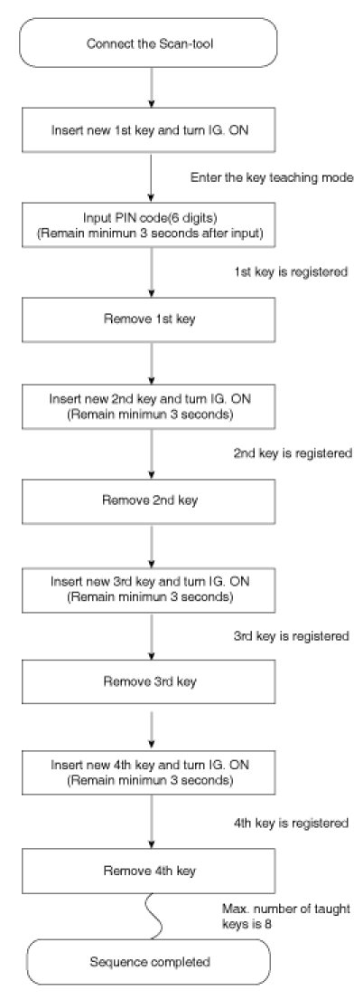
(1) PCM(ECM) learnt status.
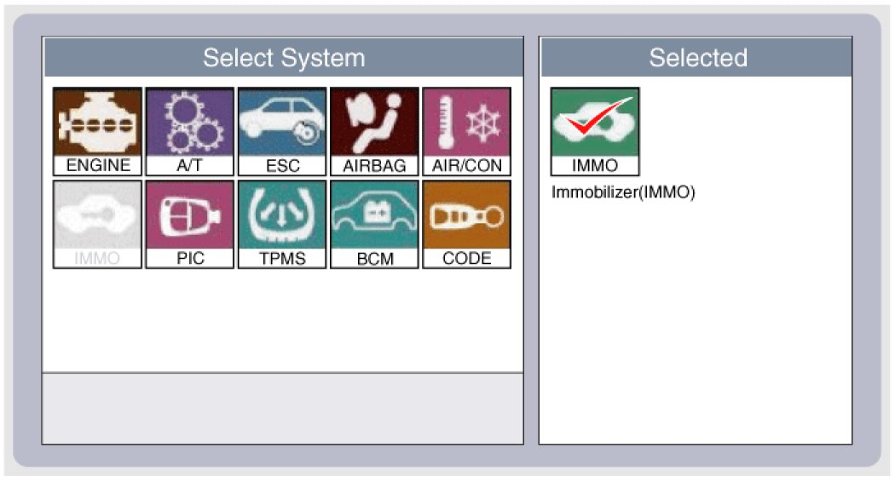
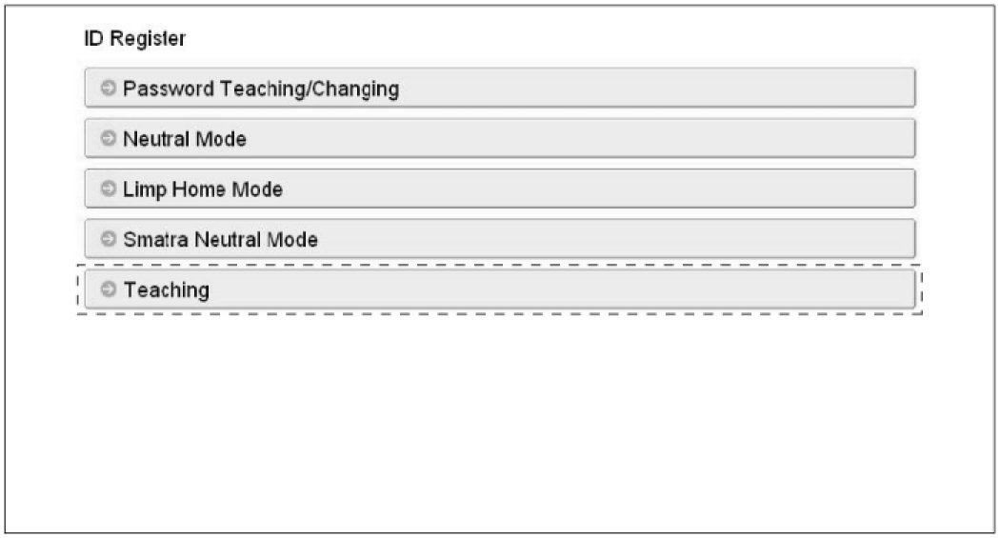
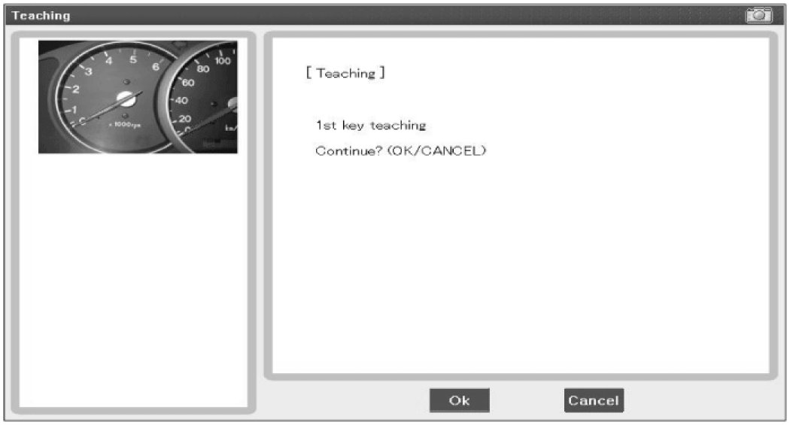
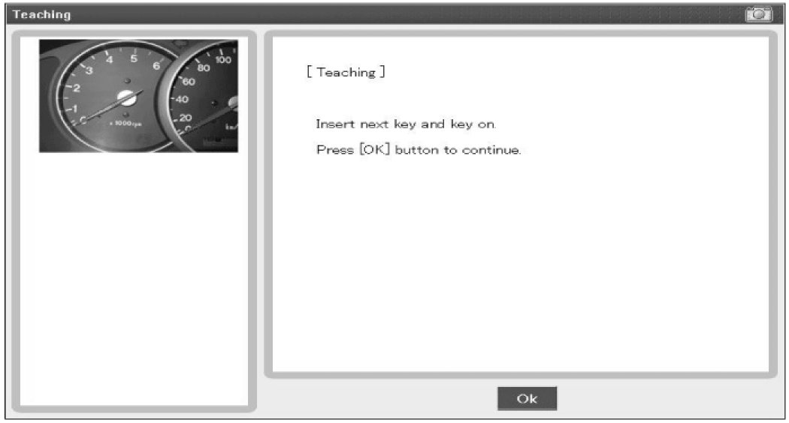
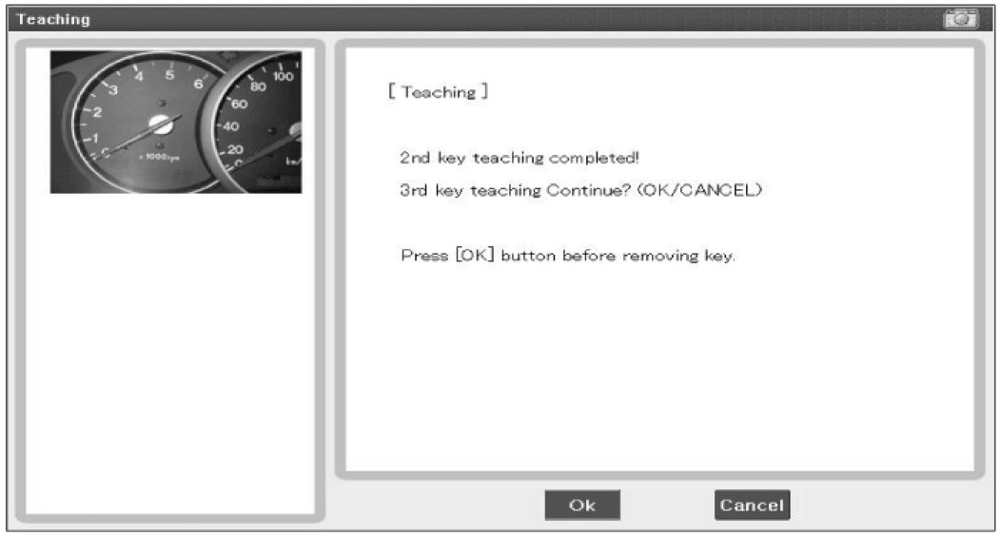
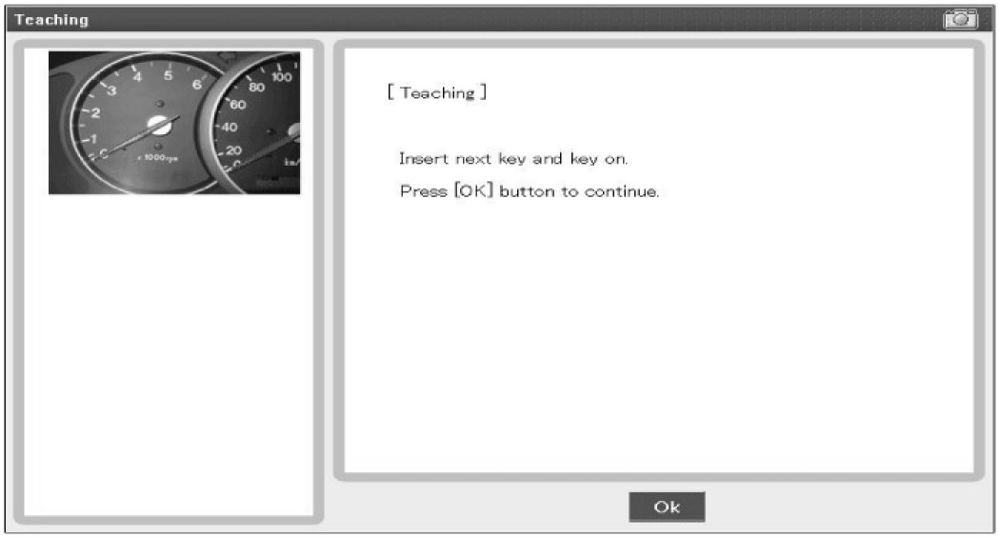
(2) PCM(ECM) virgin status.
After replacing new "PCM(ECM)" GDS displays that PCM(ECM) is virgin status in Key Teaching mode.
"VIRGIN" status means that PCM(ECM) has not matched any PIN code before.
2. User Password Teaching Procedure
The user password for limp home is taught at the service station. The owner of the vehicle can select a number with four digits.
The user password teaching is only accepted by a "learnt" PCM(ECM). Before first teaching of user password to an PCM(ECM), the status of the password is "virgin" No limp home function is possible.
The teaching is started by ignition on, with a valid key(learnt key) and sending the user password by tester. After successful teaching, the status of the user password changes from "virgin" to "learnt"
The learnt user password can also be changed. This can be done if the user password status is "learnt" and the tester sends authorization of access, either the old user password or the vehicle specific data. After correct authorization, the PCM(ECM) requests the new user password. The status remains "learnt" and the new user password will be valid for the next limp home mode.
If wrong user passwords or wrong vehicle specific data have been sent to the PCM(ECM) three times continuously or intermittently, the PCM(ECM) will reject the request to change the password for one hour. This time cannot be reduced by disconnecting the battery or any other actions. After reconnecting the battery, the timer starts again for one hour.
(1) User password teaching
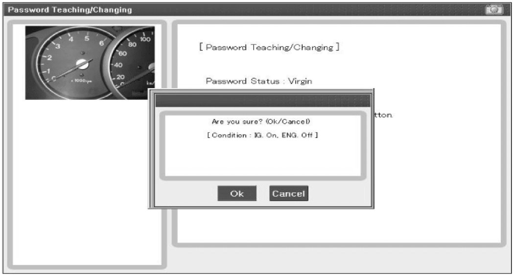
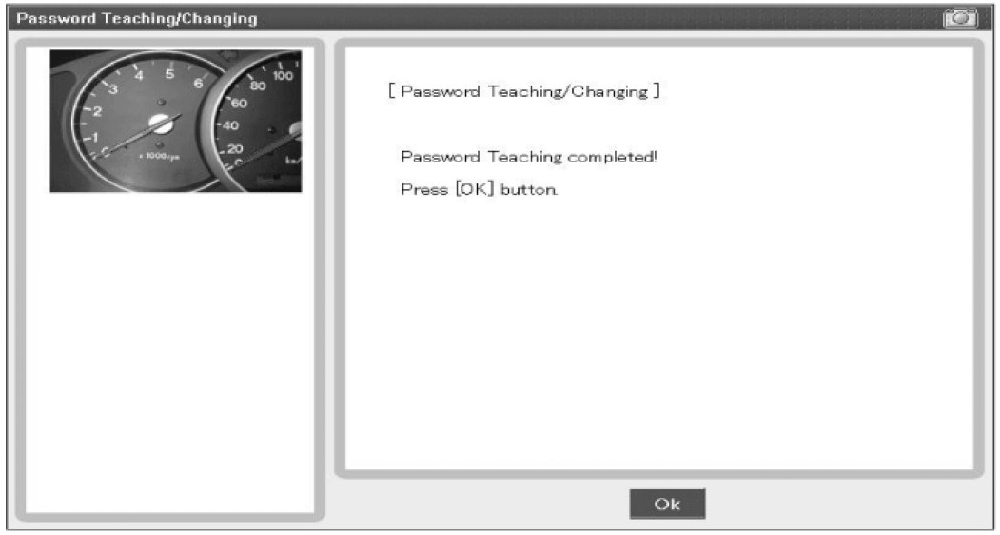
** In case of putting wrong password, retry from first step after 10 seconds.
(2) User password changing
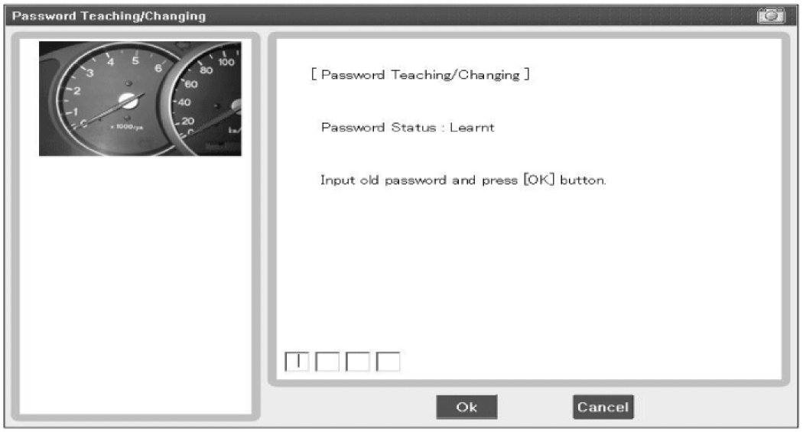
Limp Home Function
1. Limp Home By Tester
If the PCM(ECM) detects the fault of the SMARTRA or transponder, the PCM(ECM) will allow limp home function of the immobilizer. Limp home is only possible if the user password (4 digits) has been given to the PCM(ECM) before. This password can be selected by the vehicle owner and is programmed at the service station.
The user password can be sent to the PCM(ECM) via the special tester menu.
Only if the PCM(ECM) is in status "learnt" and the user password status is "learnt" and the user password is correct, the PCM(ECM) will be unlocked for a period of time (30 sec.). The engine can only be started during this time. After the time has elapsed, engine start is not possible.
If the wrong user password is sent, the PCM(ECM) will reject the request of limp home for one hour. Disconnecting the battery or any other action cannot reduce this time. After connecting the battery to the PCM(ECM), the timer starts again for one hour.
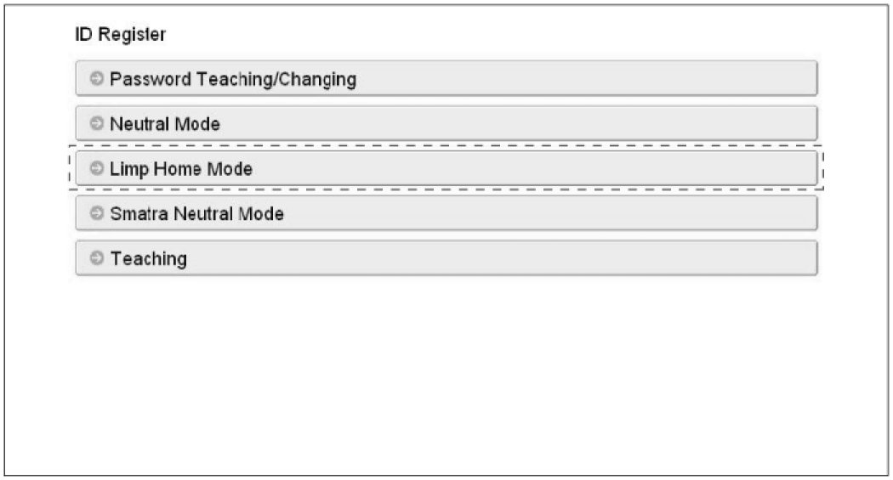
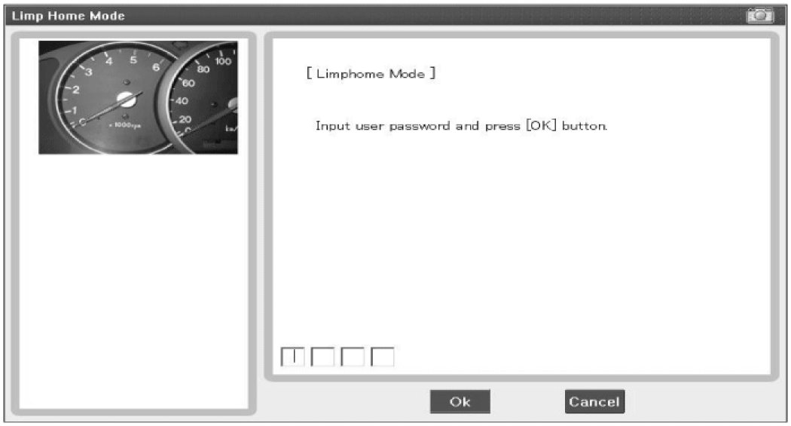
2. Limp Home By Ignition Key
The limp home can be activated also by the ignition key. The user password can be input to the PCM(ECM) by a special sequence of ignition on/off.
Only if the PCM(ECM) is in status "learnt" and the user password status is "learnt" and the user password is correct, the PCM(ECM) will be unlocked for a period of time (30 sec.).
The engine can be started during this time. After the time has elapsed, engine start is not possible. After a new password has been input, the timer (30 sec.) will start again.
After ignition off, the PCM(ECM) is locked if the timer has elapsed 8 seconds. For the next start, the input of the user password is requested again.
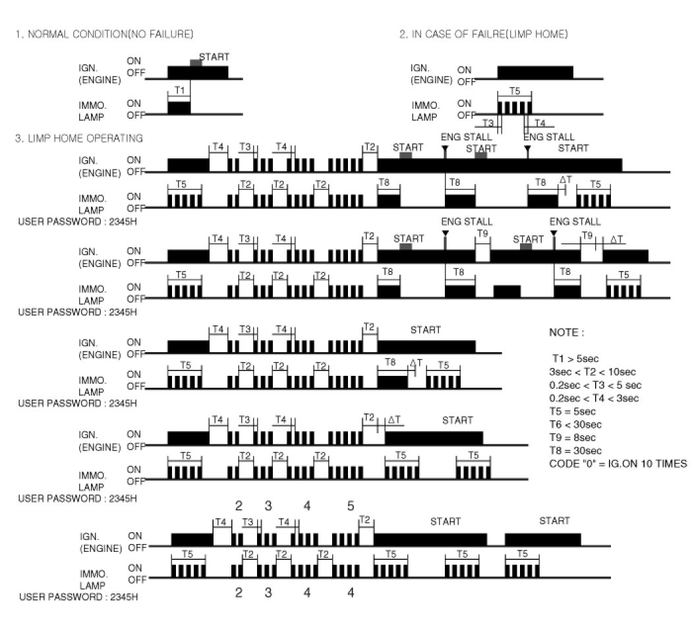
Replacement
Problems And Replacement Parts:
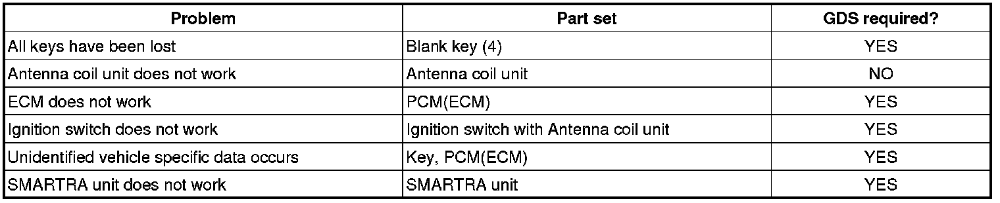
Replacement Of ECM And Smartra
In case of a defective ECM, the unit has to be replaced with a "virgin" or "neutral" ECM. All keys have to be taught to the new ECM. Keys, which are not taught to the ECM, are invalid for the new ECM . The vehicle specific data have to be left unchanged due to the unique programming of transponder.
In case of a defective SMARTRA, it needs teaching the smartra. A new SMARTRA device replaces the old one and smartra need teaching.
1. Things to remember before a replacement (PCM(ECM))
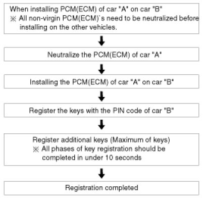
2. Things to remember before a replacement (Keys & Additional registration)
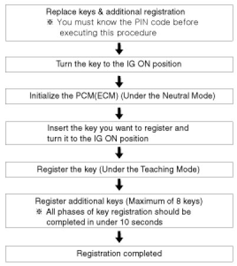
NOTE:
1. When there is only one key registered and you wish to register another key, you need to re-register the key which was already registered.
2. When the key #1 is registered and master key #2 is not registered, Put the key #1 in the IG/ON or the start position and remove it. The engine can be started with the unregistered key #2.
(Note that key #2 must be used within 10 seconds of removing key #1)
3. When the key #1 is registered and key #2 is not registered, put the unregistered master key #2 in the IG/ON or the start position.
The engine cannot be started even with the registered key #1.
4. When you inspect the immobilizer system, refer to the above paragraphs 1, 2 and 3.
Always remember the 10 seconds zone.
5. If the pin code & password are entered incorrectly on three consecutive inputs, the system will be locked for one hour.
6. Be cautious not to overlap the transponder areas.
7. Problems can occur at key registration or vehicle starting if the transponders should overlap.
Neutralizing Of ECM
The PCM (ECM) can be set to the "neutral" status by a tester.
A valid ignition key is inserted and after ignition on is recorded, the PCM (ECM) requests the vehicle specific data from the tester. The communication messages are described at "Neutral Mode" After successfully receiving the data, the PCM (ECM) is neutralized.
The ECM remains locked. Neither the limp home mode nor the "twice ignition on" function, is accepted by the PCM (ECM).
The teaching of keys follows the procedure described for the virgin PCM (ECM). The vehicle specific data have to be unchanged due to the unique programming of the transponder. If data should be changed, new keys with a virgin transponder are requested.
This function is for neutralizing the PCM (ECM) and Key. Ex) when lost key, Neutralize the PCM (ECM) then teach keys.
(Refer to the Things to do when Key & PIN Code the PCM (ECM) can be set to the "neutral" status by a scanner. If wrong vehicle specific data have been sent to SMARTRA three times continuously or intermittently, the SMARTRA will reject the request to enter neutral mode for one hour. Disconnecting the battery or other manipulation cannot reduce this time. After connecting the battery the timer starts again for one hour.
NOTE:
- Neutralizing setting condition
- In case of PCM (ECM) status "Learnt" regardless of user password "Virgin or Learnt"
- Input correct PIN code by scanner.
- Neutralizing meaning.
: PIN code (6) & user password (4) deletion.
: Locking of ECM (except key teaching permission)
- Neutralizing meaning:
- PIN Code(6) & User P/Word(4) deletion
- Locking of EMS (except Key Learning permission)
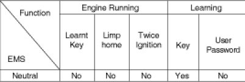
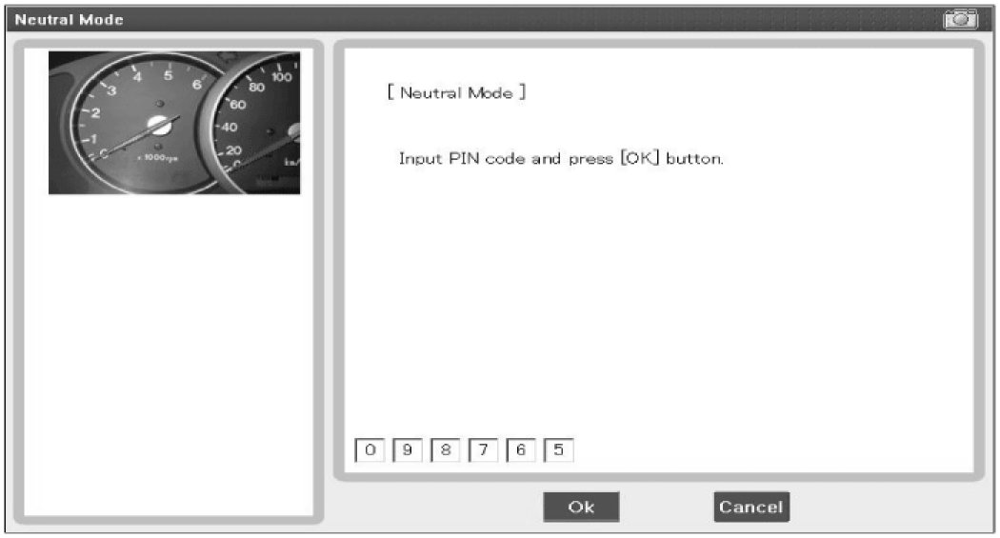
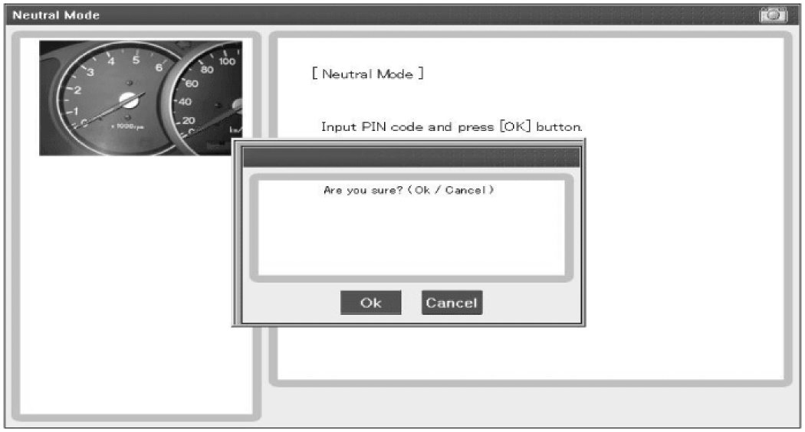
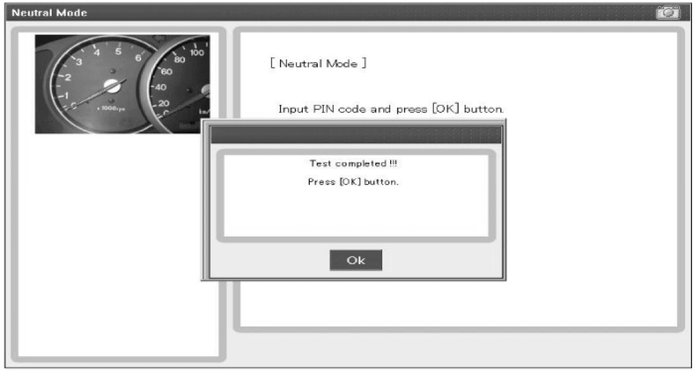
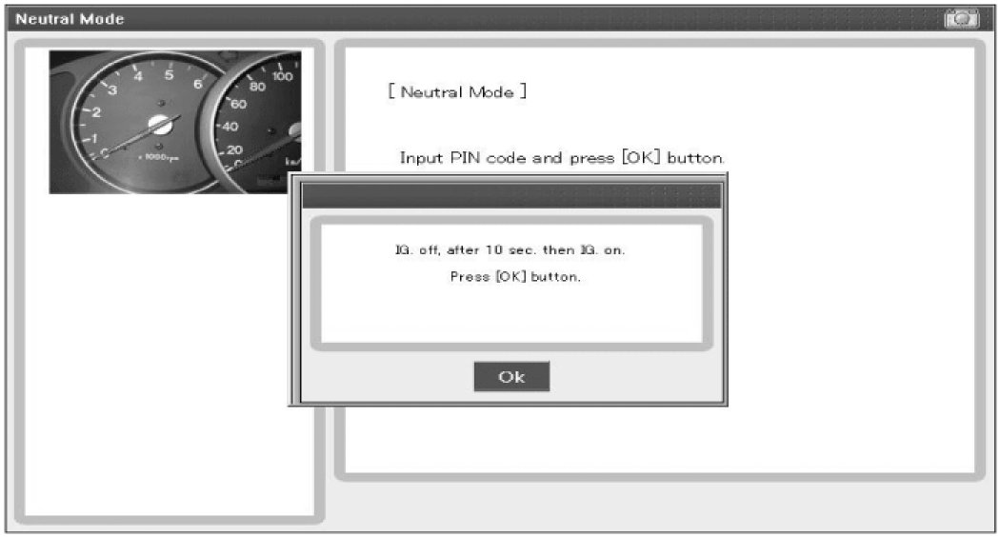
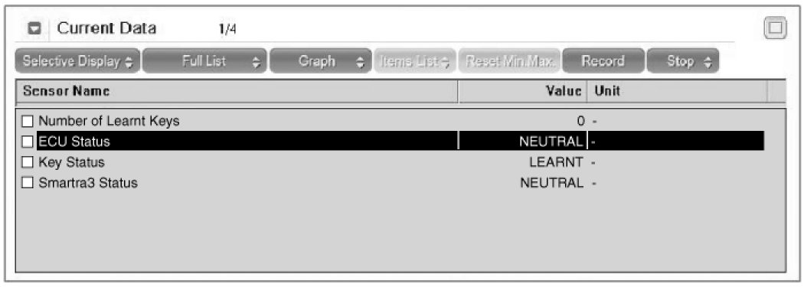
Neutralizing Of SMARTRA
The EMS can be set to the status of "neutral" by the tester.
Ignition key (regardless of key status) is inserted and after IGN ON. If receiving the correct vehicle password from GST, SMARTRA can be neutralized. The neutralization of SMARTRA is possible if DPN is same as the value inputted by GST.
In case that the SMARTRA status is neutral, the EMS keeps the lock state. And the start is not possible by "twice ignition".
In case of changing the vehicle password, new virgin transponder must be only used. And in case of virgin key, after Learning the key of vehicle password, it can be used.
If wrong vehicle specific data have been sent to SMARTRA three times continuously or intermittently, the SMARTRA will reject the request to enter neutral mode for one hour. Disconnecting the battery or other manipulation cannot reduce this time. After connecting the battery the timer starts again for one hour.
NOTE:
- Neutralizing Setting condition :
- In case of "SMARTRA status", "Learned"
- Input correct Pin code by tester
- Neutralizing meaning :
- Vehicle password(DPN Code) & SEK Code deletion.
- Permission of New DPN Learning.
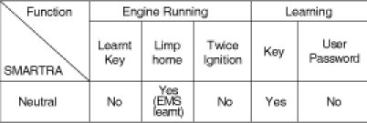
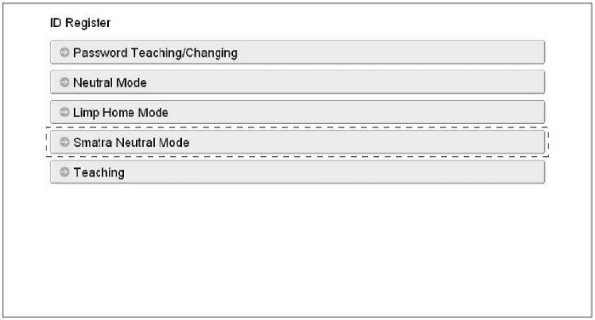
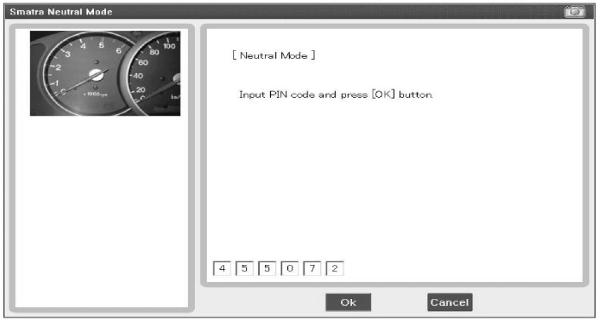
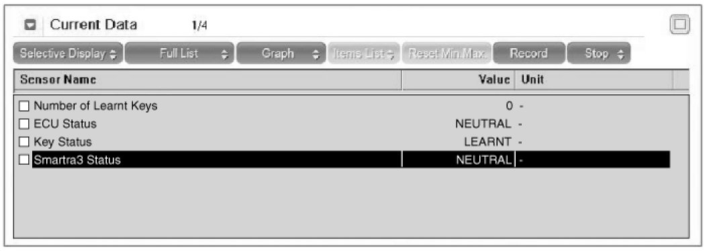